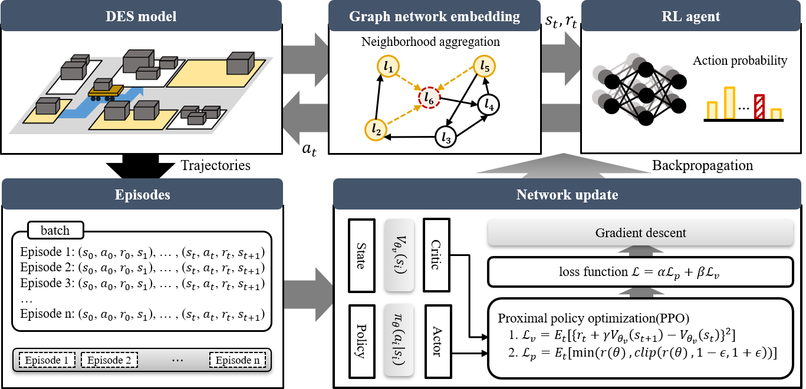
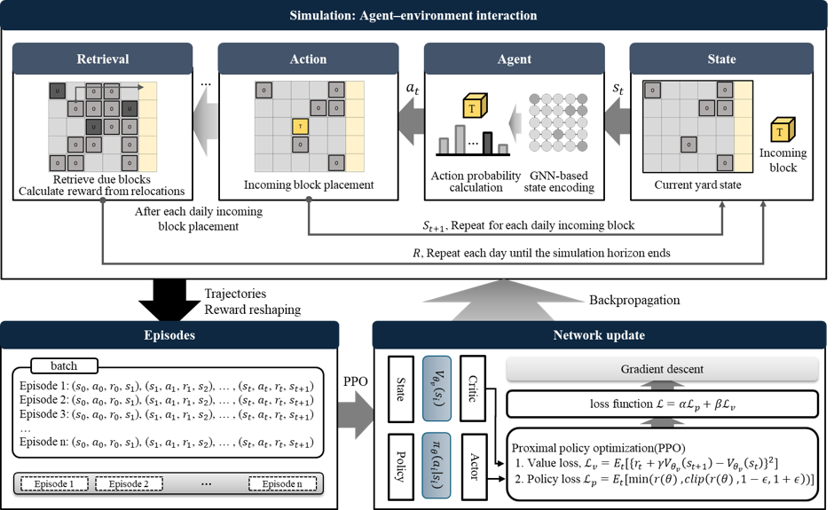
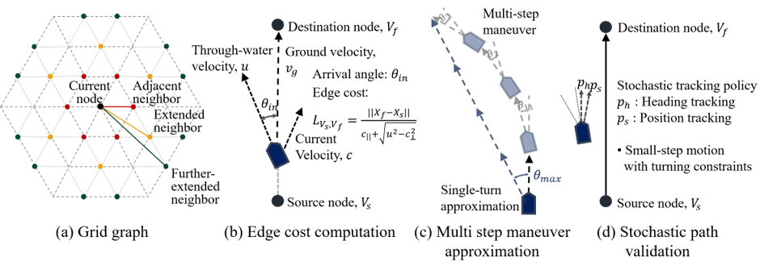
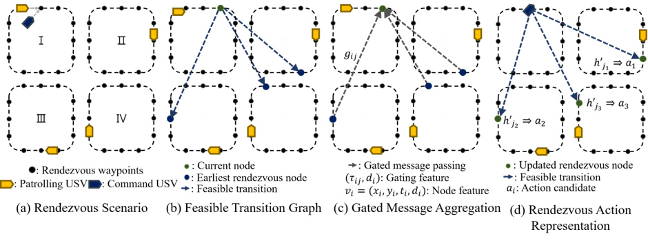
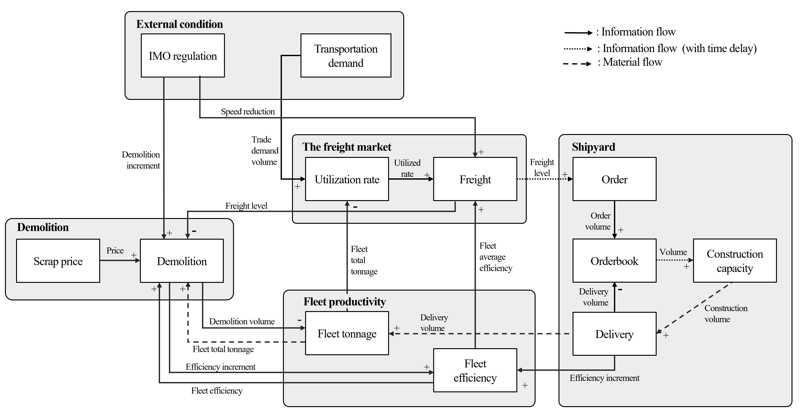
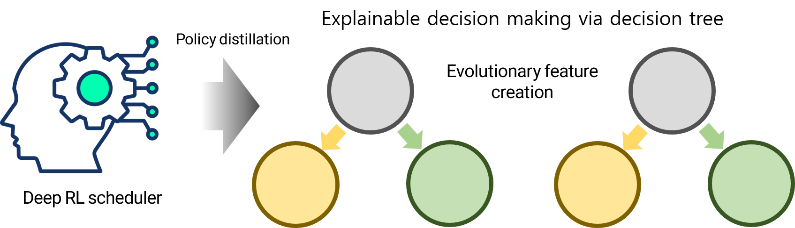

The Block Transportation Scheduling Problem focuses on finding efficient transportation schedules for hull blocks in a shipyard. In this work, the problem was formulated and represented as a graph, where the origins and destinations of blocks are modeled as nodes and each transportation task is represented by a directed edge. The input features were also designed so that the same network can handle different numbers of blocks and available transporters.
Based on this graph representation, a reinforcement learning model using a Crystal Graph Convolutional Neural Network (CGCNN) was developed. The model showed clear performance improvements over existing methods and conventional priority rules. Several GNN architectures were also compared, and CGCNN was found to be well suited to the proposed graph structure, particularly because it can directly use edge features during message passing.

This study develops retrieval path planning and placement decision algorithms to minimize hullblock relocations in congested planar storage areas within shipyards. In such environments, retrieval operations are frequently obstructed by surrounding hull blocks, leading to costly relocations.
For retrieval, a dynamic programming-based method is proposed to decompose each route into sub-paths and construct a value-guided retrieval path. For placement, a Simulated Greedy Placement (SGP) algorithm and a reinforcement learning framework integrated with Graph Neural Networks (GNNs) are introduced, offering complementary trade-offs between computational efficiency and solution quality. A Cardinal Graph Neural Network (CGNN) is further proposed to capture spatial directionality in grid-based layouts, enabling effective placement strategies beyond conventional GNN representations.

We employ a grid-based graph search method for efficient navigation over large maritime areas. The continuous operating region is discretized into representative nodes, and current-aware edge costs are used to estimate travel times between them. A multi-step maneuver approximation further incorporates vessel turning constraints into the graph connectivity. Based on these components, we propose an efficient path-planning method that explicitly accounts for both environmental effects and vessel maneuverability constraints.

For rendezvous planning, we introduce a graph representation that captures the connectivity among spatiotemporal rendezvous candidates. Each patrol route is discretized into candidate nodes defined by both location and time, and directed edges connect candidates when a feasible transition between two USVs exists, based on travel times obtained from the preceding path-planning module. A gated GCN encodes this connectivity structure, enabling a reinforcement learning policy to learn an efficient visitation sequence for multiple patrolling USVs with hierarchical priorities.
On going project
This study analyzes the shipping market from a macro perspective and proposes a model capable of long-term shipbuilding demand forecasting. Initially, a system dynamics model representing the shipping market based on maritime economy theory is presented, comprising five main components: external variables, the freight market, shipyards, fleet productivity, and demolition. Based on this system dynamics model, a case study was conducted using LNG carrier market data. The prediction results of the model were compared with seven other time series forecasting models, demonstrating its validity. Finally, scenario analyses evaluated the impact of changes in cargo transport demand, shipyard supply capacity, and carbon regulations.

This study proposes decision tree models for the explainable uniform parallel machine scheduling via policy distillation. While deep reinforcement learning (DRL) achieves high performance in scheduling, its black-box nature limits industrial adoption. To improve explainability without sacrificing performance, this study distills DRL policies into decision trees. However, the wide and dynamic action space in scheduling makes conventional tree distillation ineffective. To address this challenge, the study proposes two specialized architectures: the Rule-based Scheduling Tree (RST) and the Hierarchical Scheduling Tree (HST). Additionally, two complementary feature engineering methods are developed: the Relative Deviation (RD) method for quantifying comparative option values, and Evolutionary Feature Creation (EFC), which uses genetic programming to enhance feature representations.